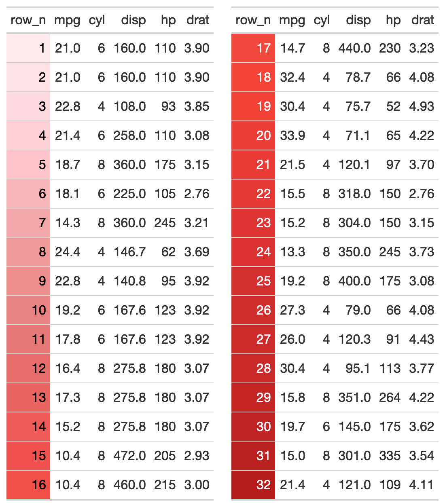

R/two-column-layouts.R
gt_two_column_layout.RdThis function takes a list() of two gt-tables and returns
them as a two-column layout. The expectation is that the user either supplies
two tables like list(table1, table2), or passes the output of gt_double_table()
into this function. The user should indicate whether they want to return the
HTML to R's viewer with output = "viewer" to "view" the final output, or to
save to disk as a .png via output = "save". Note that this is a relatively
complex wrapper around htmltools::div() + webshot::webshot(). Additional
arguments can be passed to webshot::webshot() if the automatic output is not
satisfactory. In most situations, modifying the vwidth argument is sufficient
to get the desired output, but all arguments to webshot::webshot() are
available by their original name via the passed ....
gt_two_column_layout( tables = NULL, output = "viewer", filename = NULL, path = NULL, vwidth = 992, vheight = 600, ..., zoom = 2, expand = 5 )
| tables | A |
|---|---|
| output | A character string indicating the desired output, either |
| filename | The filename of the table, must contain |
| path | An optional path of where to save the printed |
| vwidth | Viewport width. This is the width of the browser "window" when passed to |
| vheight | Viewport height This is the height of the browser "window" when passed to |
| ... | Additional arguments passed to |
| zoom | Argument to |
| expand | Argument to |
Saves a .png to disk if output = "save", returns HTML to the viewer via htmltools::browsable() when output = "viewer", or returns raw HTML if output = "html".

2-14
Other Utilities:
add_text_img(),
fa_icon_repeat(),
fmt_pad_num(),
fmt_symbol_first(),
gt_add_divider(),
gt_double_table(),
gt_fa_column(),
gt_fa_repeats(),
gt_highlight_cols(),
gt_highlight_rows(),
gt_img_rows(),
gt_merge_stack(),
pad_fn(),
tab_style_by_grp()
library(gt) # add row numbers and drop some columns my_cars <- mtcars %>% dplyr::mutate(row_n = dplyr::row_number(), .before = mpg) %>% dplyr::select(row_n, mpg:drat) # create two tables, just split half/half tab1 <- my_cars %>% dplyr::slice(1:16) %>% gt() %>% gtExtras::gt_color_rows(columns = row_n, domain = 1:32) tab2 <- my_cars %>% dplyr::slice(17:32) %>% gt() %>% gtExtras::gt_color_rows(columns = row_n, domain = 1:32) # put the tables in a list listed_tables <- list(tab1, tab2) # pass list to the gt_two_column_layout function gt_two_column_layout(listed_tables) # better option! # create a one-argument function, passing data to `gt::gt()` my_gt_fn <- function(x){ gt(x) %>% gtExtras::gt_color_rows(columns = row_n, domain = 1:32) } # pass data, your function and the nrows my_tables <- gt_double_table(my_cars, my_gt_fn, nrows = nrow(my_cars)/2) # boom, this will return it to the viewer my_output <- gt_two_column_layout(my_tables) # if you wanted to save it out instead, could use the code below # gt_two_column_layout(my_tables, output = "save", # filename = "basic-two-col.png", # vwidth = 550, vheight = 620)